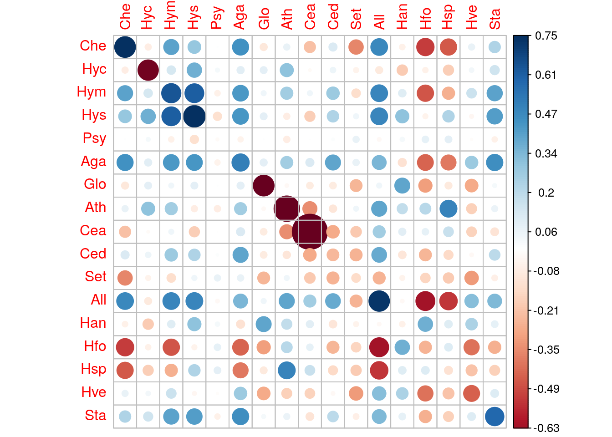

Analyze of the Trichopetra data set with the multivariate Poisson log-normal model
Julien Chiquet
2018-12-08
Source:vignettes/PLN_trichoptera.Rmd
PLN_trichoptera.RmdThis vignette illustrates the use of the PLN function and the methods accompaning the R6 class PLNfit. From the statistical point of view, the function PLN adjusts a multivariate Poisson lognormal model to a table of counts. Such data are common in many application fields such as ecology (abundance table), or genomics (single cell data). These data often comes with some external knowledge (via covariates and offsets) which should be taken into account during the fits.
PLN is the building block for all the multivariate models found in the PLNmodels package: having a basic understanding of both the mathematical background and the associated set of R functions is good place to start.
We will illustrate our point with an ecological data set concerning abundances of Trichopetera species, coupled with some meteological factors that may influence the presence their presence.
Mathematical background
The multivariate Poisson lognormal model relates some \(p\)-dimensional observation vectors \(\mathbf{Y}_i\) to some \(p\)-dimensional vectors of Gaussian latent variables \(\mathbf{Z}_i\) as follows \[\begin{equation} \label{eq:pln-model} \begin{array}{rcl} \text{latent space } & \mathbf{Z}_i \sim \mathcal{N}({\boldsymbol\mu},\boldsymbol\Sigma) \\ \text{observation space } & Y_{ij} | Z_{ij} \quad \text{indep.} & \mathbf{Y}_i | \mathbf{Z}_i\sim\mathcal{P}\left(\exp\{\mathbf{Z}_i\}\right) \end{array} \end{equation}\]
The parameter \({\boldsymbol\mu}\) corresponds to the main effects and the latent covariance matrix \(\boldsymbol\Sigma\) describes the underlying structure of dependence between the \(p\) variables.
This model generalizes naturally to a formulation closer to a multivariate generalize linear model, where the main effect is due to a linear combination of \(d\) covariates \(\mathbf{x}_i\). We also let the possibility to add some offsets for the \(d\) variables and in each sample., that is \(\mathbf{o}_i\). Hence, model generalizes to
\[\begin{equation} \label{eq:pln-model-glm} \mathbf{Y}_i | \mathbf{Z}_i \sim \mathcal{P}\left(\exp\{\mathbf{Z}_i\}\right), \qquad \mathbf{Z}_i \sim \mathcal{N}({\mathbf{o}_i + \mathbf{x}_i^\top\boldsymbol\Theta},\boldsymbol\Sigma) \\ \end{equation}\] where \(\boldsymbol\Theta\) is a \(d\times p\) matrix of regression parameters. At the end of the day, the data matrices available to feed the model are
- the \(n\times p\) matrix of counts \(\mathbf{Y}\)
- the \(n\times p\) matrix of covariates \(\mathbf{X}\)
- the \(n\times p\) matrix of offsets \(\mathbf{O}\)
Analysis of the Trichoptera data set
Trichoptera data
The trichoptera data set is included in the package:
See ?PLNmodels::trichoptera for details.
The data.frame trichoptera includes 49 rows (the observations - or trapping nights) and 14 columns.
## [1] "Abundance" "T_max" "T_evening"
## [4] "T_min" "Wind" "Pressure"
## [7] "Pressure_range" "Humidity" "Cloudiness_night"
## [10] "Precipitation_night" "Cloudiness_average" "Precipitation_total"
## [13] "Group"The columns are all univariate covariates expect the Abundance column, which is a \(49 \times 17\) matrix of abundancies for each 17 species during the 49 trapping nights. It corresponds to the matrix \(\mathbf{Y}\) in our model:
## Che Hyc Hym Hys Psy Aga Glo Ath Cea Ced Set All Han Hfo Hsp Hve Sta
## 1 0 0 5 0 17 0 0 0 0 2 0 1 0 1 2 0 1
## 2 0 0 3 0 8 0 0 0 0 0 0 2 0 0 0 0 0
## 3 0 0 1 0 32 0 0 0 0 0 0 4 0 0 1 0 0
## 4 0 0 3 0 176 4 0 0 0 1 0 3 0 0 3 0 2
## 5 0 0 4 0 69 2 0 0 0 0 0 1 0 0 1 0 2The matrix \(49 \times 13\) entries remaings corresponds to the matrix \(\mathbf{X}\) in our model:
## T_max T_evening T_min Wind Pressure Pressure_range Humidity
## 1 22.2 18.7 11.0 -2.3 998.5 4.1 60
## 2 24.2 19.8 8.4 -2.7 999.5 -1.1 63
## 3 27.4 22.0 11.0 -0.7 997.2 -3.6 73
## 4 29.0 23.0 12.6 2.3 991.1 -6.2 71
## 5 28.2 22.5 12.0 2.3 990.1 1.7 62
## 6 28.0 23.9 13.8 -2.0 990.1 -0.8 64
## Cloudiness_night Precipitation_night Cloudiness_average
## 1 19 0 17
## 2 0 0 27
## 3 6 0 13
## 4 81 0 52
## 5 50 0 34
## 6 50 0 36
## Precipitation_total Group
## 1 0 1
## 2 0 1
## 3 0 1
## 4 0 1
## 5 0 1
## 6 0 1It seems natural to add an offset corresponding to the total count per night, so a 15th column with a \(49 \times 17\) of offset. It corresponds to the matrix \(\mathbf{O}\) in our model:
A model with latent main effects for the Trichopetra data set
The model can be fitted with the function PLN as follows:
##
## Initialization...
## Adjusting a PLN model with full covariance model
## Post-treatments...
## DONE!Note the use of the formula object to specify the model: the vector \(\boldsymbol\mu\) of main effects in the mathematical formulation (one per column species) is specified in the call with the formula ~ 1. We use the function offset with a log transform of the total count. Abundace is a variable in ther data frame trichoptera correspondings to a matrix of 17 columns.
myPLN is an R6 object with class PLNfit, which comes with a couple of methods, as recalled when printing such an object:
## A multivariate Poisson Lognormal fit with full covariance model.
## ==================================================================
## degrees_freedom loglik BIC ICL R_squared
## 170 -1051.523 -1382.327 -2205.476 0.9221581
## ==================================================================
## * Useful fields
## $model_par, $fitted, $latent, $var_par, $optim_par
## $loglik, $BIC, $ICL, $loglik_vec, $degrees_freedom, $criteria
## * Useful S3 methods
## print(), vcov(), coef(), predict()Field access to a PLN output
Let us try to access the most common fields:
## [1] -1051.523## [1] -1382.327## [1] -2205.476## [1] 0.9221581## degrees_freedom loglik BIC ICL
## 170.0000000 -1051.5226431 -1382.3273685 -2205.4759919
## R_squared
## 0.9221581We can also reach the matrix of regression parameters and the variance/covariance matrix of the latent variable \(Z\) with the traditional function found in R for (g)lm manipulation:
## (Intercept)
## Che -8.1771636
## Hyc -8.2720330
## Hym -2.9790535
## Hys -7.0826553
## Psy -0.5471443
## Aga -4.0920004## Che Hyc Hym Hys Psy
## Che 2.526943821 -0.008766847 0.3603101 0.4448887 -0.017850341
## Hyc -0.008766847 1.902243345 0.1124342 0.2715021 -0.146502283
## Hym 0.360310110 0.112434233 1.2449163 0.8655075 -0.118961495
## Hys 0.444888729 0.271502063 0.8655075 2.6625654 -0.147169999
## Psy -0.017850341 -0.146502283 -0.1189615 -0.1471700 0.076295612
## Aga 0.309093537 -0.132641681 0.5132070 0.4248568 0.001717414
## Aga Glo Ath Cea Ced
## Che 0.309093537 0.08953427 0.35228473 -0.0096483095 0.33794406
## Hyc -0.132641681 0.17176875 0.11180019 0.0055988760 0.22269439
## Hym 0.513207009 0.20984215 0.38574277 -0.0219839180 0.50831046
## Hys 0.424856789 0.34248317 0.60821330 -0.0166596205 0.68165077
## Psy 0.001717414 -0.05013468 -0.04855131 0.0002951239 -0.09855308
## Aga 1.105061747 -0.06445872 0.19666849 -0.0229611075 0.21827286
## Set All Han Hfo Hsp Hve
## Che -0.05824348 0.272202604 -0.1830943 -0.3634547 -0.4416038 0.31293725
## Hyc 0.47595629 -0.263369260 0.6242441 0.5588998 0.6708982 -0.13148839
## Hym -0.18107123 0.680608021 0.2121454 -0.3947503 -0.3308211 0.16050977
## Hys 0.13911592 0.369005057 0.1394216 -0.1844264 -0.1739328 0.24085875
## Psy -0.09155024 -0.004547741 -0.2886519 -0.1457209 -0.1916850 0.04573374
## Aga -0.30242347 0.594343491 -0.1729006 -0.8149132 -0.7806315 0.18710566
## Sta
## Che 0.3641102
## Hyc 0.2566928
## Hym 0.4788411
## Hys 0.6151163
## Psy -0.1214902
## Aga 0.4401105Consider plotting the parameters with the nice corrplot package, e.g. the the covariance matrix:

Observation weights
It is also possible to use observation weights like in standard (generalized) linear models:
myPLN_weighted <- PLN(Abundance ~ 1 + offset(log(TotalCount)), data = trichoptera, weights = runif(nrow(trichoptera)))##
## Initialization...
## Adjusting a PLN model with full covariance model (with observation weigths)
## Post-treatments...
## DONE!
Make prediction with new data
The prediction method can be use to predict new responses from a new table of data (with both covariates and offset if needed.)
## Che Hyc Hym Hys Psy Aga
## 1 0.028828355 0.019185212 2.7475250 0.09217404 17.431856 0.8418329
## 2 0.012923056 0.008600267 1.2316491 0.04131940 7.814280 0.3773734
## 3 0.037775086 0.025139243 3.6002051 0.12077977 22.841742 1.1030914
## 4 0.190863593 0.127019332 18.1905101 0.61025569 115.410908 5.5735144
## 5 0.078532416 0.052263163 7.4846370 0.25109479 47.486780 2.2932690
## 6 0.017893462 0.011908062 1.7053603 0.05721147 10.819773 0.5225170
## 7 0.007952650 0.005292472 0.7579379 0.02542732 4.808788 0.2322298
## 8 0.033798761 0.022493007 3.2212362 0.10806611 20.437348 0.9869765
## 9 0.011928975 0.007938708 1.1369069 0.03814098 7.213182 0.3483447
## 10 0.003976325 0.002646236 0.3789690 0.01271366 2.404394 0.1161149
## Glo Ath Cea Ced Set All
## 1 0.08963347 0.13677981 0.024717549 1.2331079 0.7870233 0.52074486
## 2 0.04018052 0.06131509 0.011080281 0.5527725 0.3528035 0.23343735
## 3 0.11745075 0.17922872 0.032388513 1.6157965 1.0312719 0.68235534
## 4 0.59343537 0.90557670 0.163647224 8.1640245 5.2106367 3.44769012
## 5 0.24417393 0.37260708 0.067334014 3.3591559 2.1439599 1.41858083
## 6 0.05563457 0.08489782 0.015341927 0.7653773 0.4884972 0.32322095
## 7 0.02472647 0.03773236 0.006818634 0.3401677 0.2171099 0.14365376
## 8 0.10508751 0.16036254 0.028979196 1.4457127 0.9227169 0.61052846
## 9 0.03708971 0.05659854 0.010227951 0.5102515 0.3256648 0.21548063
## 10 0.01236324 0.01886618 0.003409317 0.1700838 0.1085549 0.07182688
## Han Hfo Hsp Hve Sta
## 1 1.4583620 0.24466857 1.5011180 0.060303258 2.7174382
## 2 0.6537485 0.10967901 0.6729150 0.027032495 1.2181619
## 3 1.9109571 0.32060019 1.9669822 0.079018062 3.5607810
## 4 9.6553623 1.61987466 9.9384365 0.399249158 17.9913148
## 5 3.9727793 0.66651093 4.0892525 0.164274393 7.4026764
## 6 0.9051902 0.15186325 0.9317284 0.037429609 1.6866858
## 7 0.4023068 0.06749478 0.4141015 0.016635382 0.7496381
## 8 1.7098037 0.28685280 1.7599315 0.070700372 3.1859620
## 9 0.6034601 0.10124217 0.6211523 0.024953072 1.1244572
## 10 0.2011534 0.03374739 0.2070508 0.008317691 0.3748191
## attr(,"type")
## [1] "response"